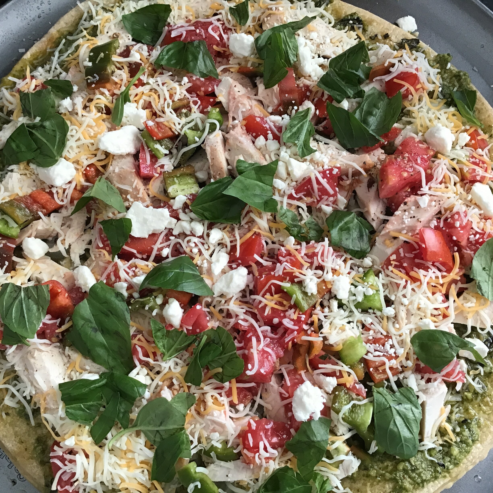

Pesto Pizza

Description
Per Serving: 394 calories; protein 17.3g; carbohydrates 39.3g; fat 19.9g; cholesterol 35.6mg; sodium 936.8mg.
Ingredients
- 1 (12 inch) pre-baked pizza crust
½ cup pesto
1 ripe tomato, chopped
½ cup green bell pepper, chopped
1 (2 ounce) can chopped black olives, drained
½ small red onion, chopped
<
1 (4 ounce) can artichoke hearts, drained and sliced
1 cup crumbled feta cheese
Steps
- Preheat oven to 450 degrees F (230 degrees C).
- Spread pesto on pizza crust. Top with tomatoes, bell peppers, olives, red onions, artichoke hearts and feta cheese.
- Bake for 8 to 10 minutes, or until cheese is melted and browned.